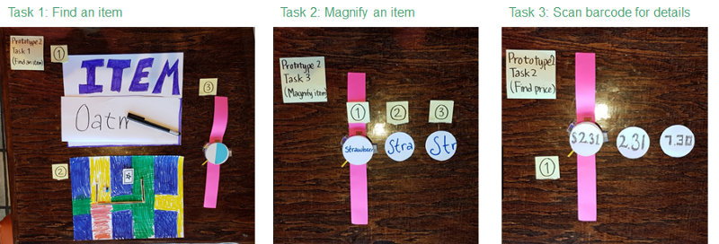

Smatch is a tablet + smartwatch integrated technology to enhance grocery shopping experience for users with low-vision.
Project Goal
- To use participatory research and design methods to create an assistive technology for users with low-vision.
Discover
Our Participant
Em is a graduate student who travels around daily with her guide dog, Rem. She developed low-vision in her childhood due to Stargardt’s disease -- a progressive degeneration of a small area in the center of the retina that is responsible for sharp, straight-ahead vision. Because she likes to select her own produce, she prefers to visit her usual grocery store in-person on a weekly basis.
Problem Overview
With each visit, people with low vision often face difficulties in finding an item in the store, finding the price and available promotions of the items, as well as the details printed on the item such as nutritional information, ingredients, or allergens.
Context of Use
Our technology is to be used in the grocery store. Because our participant always bring her guide dog with her, Em’s left hand would be holding the harness while her right hand pulls the shopping cart behind or to her side.
Define
Tasks
To begin our ideation process, we have defined 3 tasks to address the problems we discovered.
Design
Primary Sketches
We explored several different system input and output methods (handwriting, voice, touchscreens, smartwatch, light signals, AR glasses).
Secondary Sketches
After weighing the pros and cons of our initial ideas, we have decided to build upon primary sketch #1 (tablet) and primary sketch #6 (smartwatch).The mounted-tablet prototype provides a large screen for Em to easily read, while not burdening her with additional things to carry. The Smartwatch is a wearable alternative that would not take up hand space. We sketched out how each prototype would be able to support our 3 tasks.
Lo-fi Prototype
Prototype 1: Tablet
The first prototype is a tablet-based solution that can be mounted onto the shopping cart. It takes voice input, has a camera at the back, and a scanner in the front. The device also provide indicators to tell whether the user is currently heading in the right direction.
Prototype 2: Smart-watch
The second prototype is a wearable solution that the user can wear on the same hand she holds the service dog with. It also has a separate component for handwriting input and screen. Buttons are used for switching between modes, while the toggle is for adjusting the zoom level.
Lo-fi Prototype Evaluation
We met with Em and ask her to walk through each of the prototype with the 3 tasks. We then asked her to evaluate how well each task is supported, as well as which prototype she thinks works better for that task. We then identified and rated the critical incidents found in each prototype.
Hi-fi Prototype
Neither of our two low fidelity prototypes completely met the user’s needs in completing the three tasks. The smartwatch had very limited screen space, but the tablet was not convenient. By using the tablet for stationary functions that require a lot of reading and the watch for interactions on the go, we were able to create a system that supports all three tasks in an intuitive way.

Task 1: Find an item
Task 2: Magnify an item
Task 3: Scan an item
Prototyping Tools
The tablet prototype has been created using the InVision while the smartwatch has been created using the AdaFruit Flora microcontroller and programmed with the Arduino IDE using C language. The prototype utilizes a NeoPixel Ring (16 RGB LED), an accelerometer and compass sensor (LSM303), and is powered by a 3.7V lithium ion polymer battery.
Evaluation
Overall, Em found our interface to be very straightforward and easy to learn. She was able to understand the most of the tablet component without requiring the researcher’s explanation. As for the smartwatch, she was able to correctly decipher what the LED lights represent. She likes the addition of the settings options because it allowed for more flexibility in usage.
Reflection
This has definitely been one of the most fun and challenging projects I’ve worked on. It is my first time prototyping with a hardware device (soldering is an ART!). Despite numerous difficulties, I am very happy with what we achieved and the friendship that formed during the course of this project.
1. Leverage existing device accessibility features when possible.
In our case, the triple tap zoom feature was preferred over our adjustable font size option.
2. Consider using multiple sensory outputs on multiple synchronized devices when designing accessible devices.
We used a combination of smartwatch and tablet for audio, visual, and haptic feedback.
3. Participatory design may lead to designing for just one person.
Users with low-vision may have very different needs and preferences. Hence, it is important to provide as much flexibility to accommodate these differences as possible .